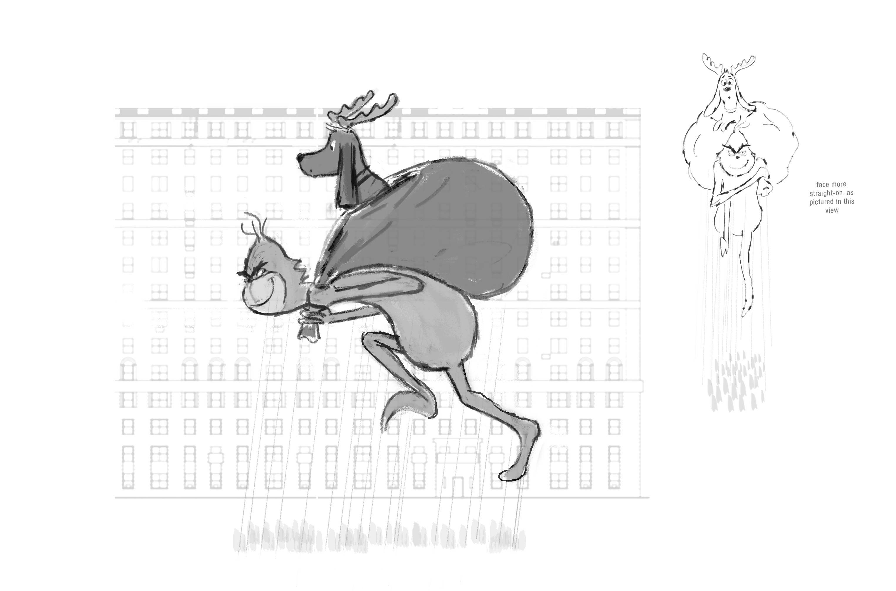
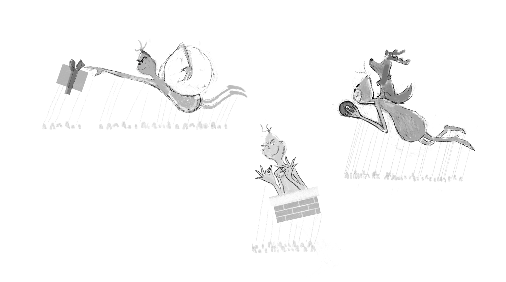
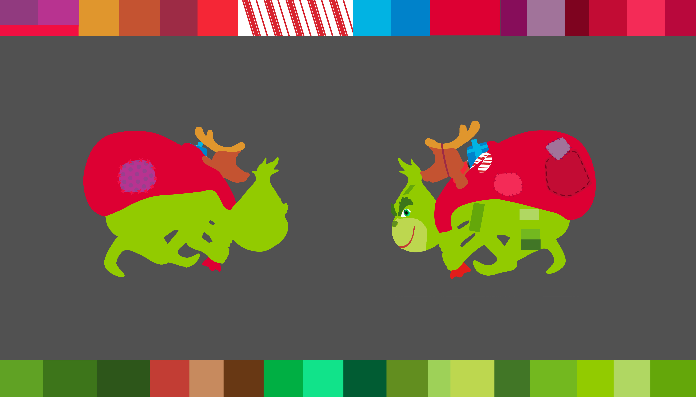
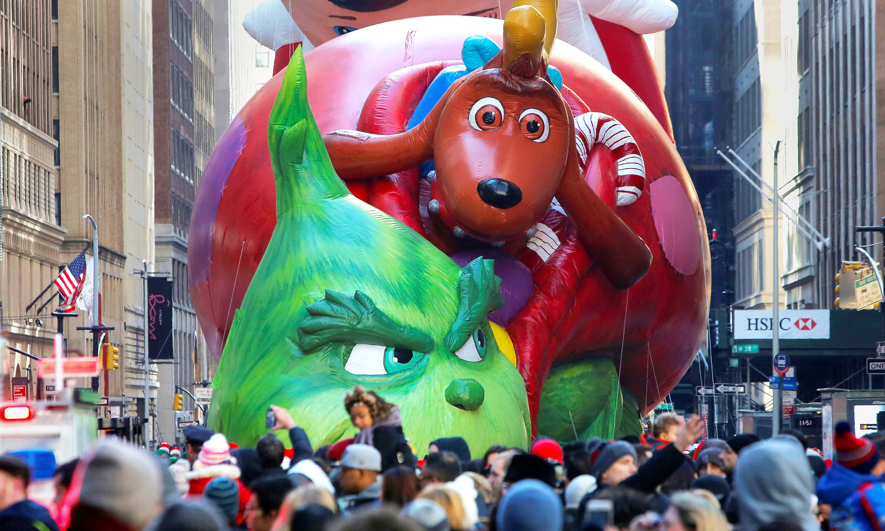

THE GRINCH BALLOON – In support of the theatrical release of The Grinch, Illumination/Universal partnered with Macy’s Studio for the creation of a supersized balloon to fly in the renowned Thanksgiving Day Parade. Measuring over 49 feet long, the float depicts Grinch hauling away his bag of stolen presents, with loyal sidekick Max perched atop. The design was developed in sketch form, computer models and sculpted maquettes before being intricately engineered into flight-ready form. The parade draws over 23 million viewers each year.



